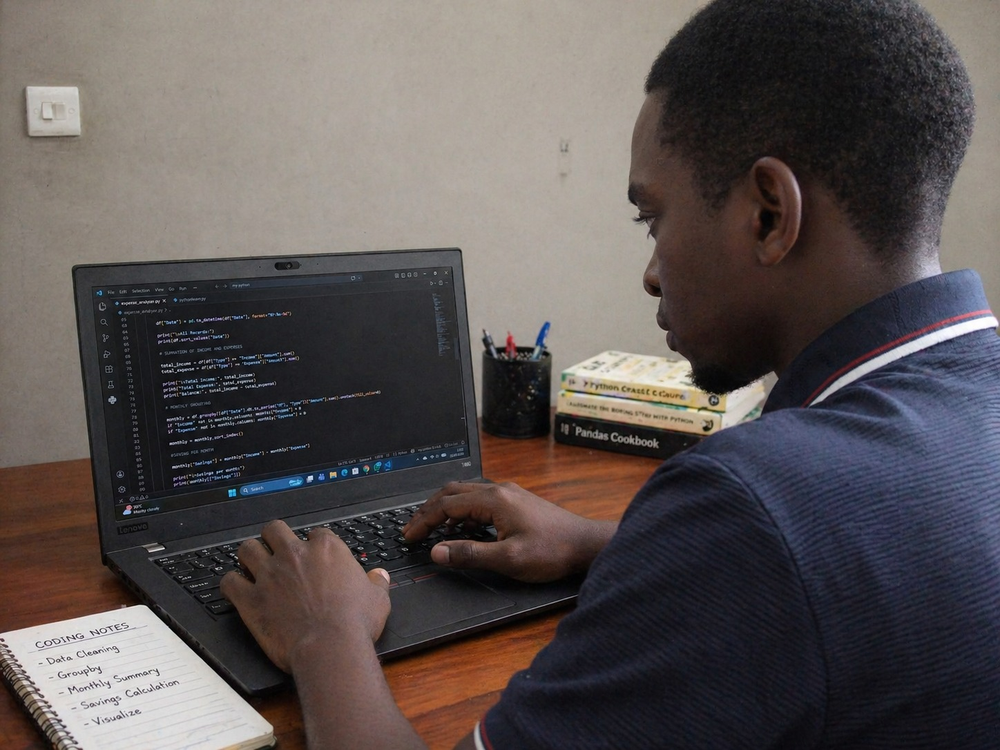

Hello, Iam Nurdini Abdallah, a Computer Science student at the University of Dar es Salaam (UDSM) with a strong interest in data science and programming
Beyond technology, I explore creative activities such as handicraft, which enhance my problem-solving and innovative thinking. I enjoy learning from others and exploring social realities through curiosity and observation.
| Level | School | Year |
|---|---|---|
| bachelor | UDSM | 2025-present |
| A`level | Kibaha Sec | 2023-2025 |
| O`level | Mzumbe Sec | 2019-2022 |
| primary | Kilangala | 2012-2018 |
